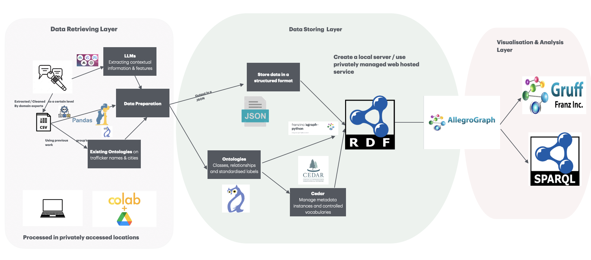
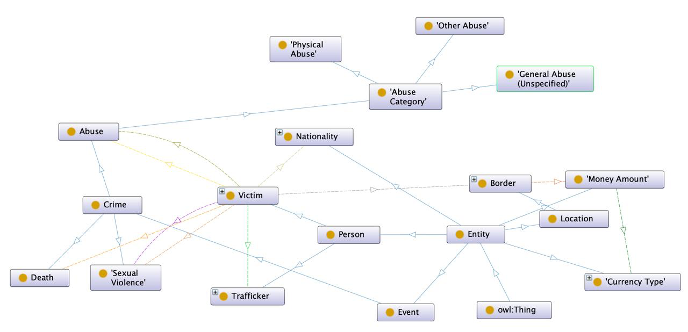
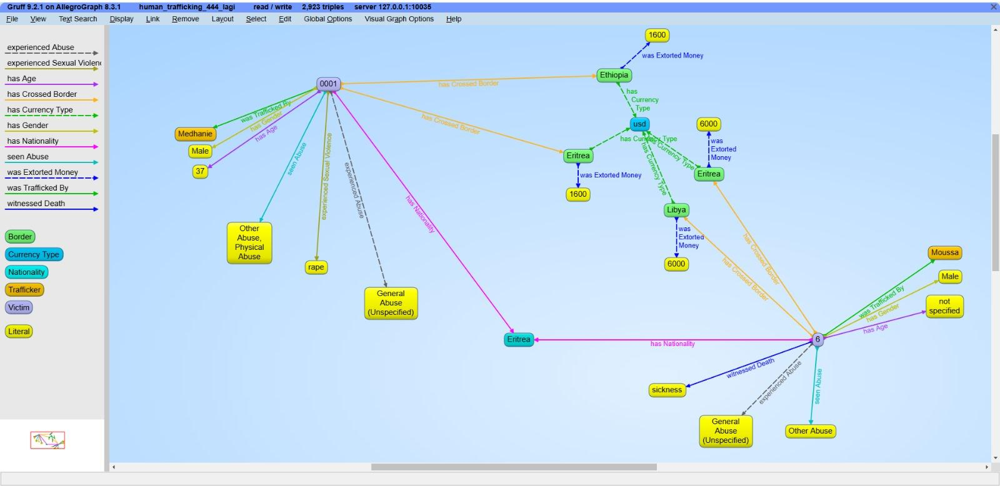
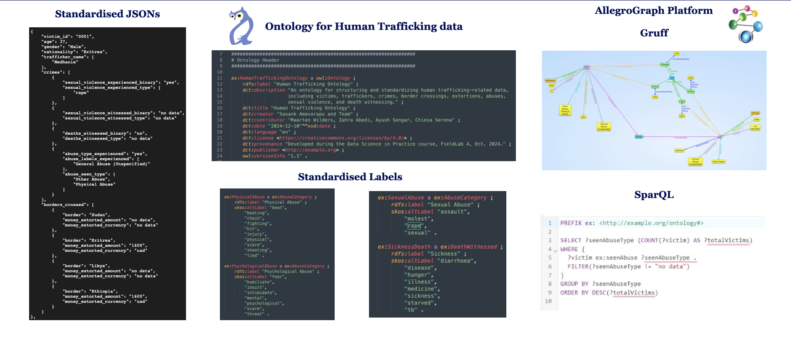

MSc Project · Data Science in Practice, Leiden University
Human Trafficking Data: A FAIR Knowledge Graph
This project was part of the Data Science in Practice course in my Master's programme at Leiden University, done with a team of five. The goal was to take real interview data from refugees who survived human trafficking, mostly along routes through North Africa. We wanted to turn it into something researchers, humanitarian organisations, and policymakers could actually use.
Background
Many refugees are promised safe passage through regions like the Libyan desert. Some end up taken hostage, exploited, or abused along the way instead. The dataset we worked with came from interviews with survivors. It recorded details like transit routes, the traffickers involved, and the abuses that occurred.
The tricky part was the data itself. It came from Excel interview sheets, and it showed real problems. There were missing fields, inconsistent formats, and a lot of information buried in free text instead of proper structured fields. Basically a spreadsheet's worst nightmare. It was hard to analyse and impossible to connect with other systems or datasets. Our job was to clean and structure this data using an ontology and RDF, following the FAIR principles. So it could actually be queried, connected to other data sources, and reused by other people down the line.
How the project was structured
We split the work into three parts: data extraction, data storage, and data analytics.
Data extraction. The raw Excel interviews got cleaned and standardised using Python and Pandas in Google Colab. One script processed everything into an intermediate file with one entry per interview. A second script merged duplicate entries so each victim ended up with a single, aggregated record. Regex helped clean messier fields like payments and dates, turning things like "$200" or "400 USD" into one consistent number and currency. We also tried locally hosted LLMs to help spot inconsistent spellings and suggest standard terms, mostly for things like nationality and location names, with a person always checking the suggestions before they went in.

Data storage. The cleaned data was converted into RDF triples using a custom ontology (built in OWL and designed in Protégé) and loaded into AllegroGraph, a graph database, using the RDFLib library and AllegroGraph's own Python client. Victim attributes, crimes, and traffickers all became connected triples instead of flat spreadsheet rows. So did border crossings. We also used SKOS to add alternative labels to abuse categories, so slightly different wordings like "beating" or "assault" still map back to the same standard term. This matters because trafficking cases rarely happen in isolation. The same traffickers show up at different borders, routes repeat, and those patterns are much easier to spot in a graph than in a wall of Excel cells. We also looked into CEDAR for automating metadata, but its API turned out to be too undocumented and fiddly for our timeline, so we generated the RDF directly from our JSON instead.

Data analytics. We ran SPARQL queries to answer specific questions about the dataset. Things like which types of abuse were reported most often, which borders had the highest number of victims, and which traffickers were most active at which crossings. We also looked at how much money was extorted at each border, all standardised into euros. Traffickers apparently don't accept a single currency. A few real numbers that came out of this: Libya, Sudan, and Eritrea had the highest victim counts among all borders. The highest single extortion payment recorded was €80,000 at the Morocco border. We also used Gruff, AllegroGraph's built-in graph tool, to visualise the data. It made the relationships between victims, traffickers, and routes much easier to follow than staring at a table.

The tools and frameworks, all in one place
Since this is the part people usually skim for, here it all is. Python, Pandas, and Google Colab handled data cleaning and prep. Regex took care of parsing messier fields, and locally hosted LLMs helped suggest standard spellings and terms. OWL and Protégé were used to build and visualise the ontology, with SKOS adding standardised alternative labels. RDF and RDFLib turned everything into triples, stored as Turtle and N-Triples files. AllegroGraph, with its own Python client, served as the graph database. Gruff handled visualisation, and SPARQL handled the actual querying. GitHub was used for code versioning throughout. CEDAR and a LangChain-based RAG pipeline were both explored earlier on but dropped in favour of simpler, more reliable approaches once we saw they would not hold up with our timeline and data.
Why FAIR mattered here
The whole project was built around the FAIR principles: Findable, Accessible, Interoperable and Reusable. In practice, that meant every victim, trafficker and incident got a persistent URI so records could actually be found and referenced (Findable). Access to the sensitive parts of the data was restricted through AllegroGraph's role-based access control, so not just anyone could query everything (Accessible). The ontology-driven structure kept terminology consistent and RDF-compatible, so the dataset could in theory be linked up with other trafficking datasets or ontologies later (Interoperable). And the standardised labels and OWL classes mean the same ontology could be reused or adapted for future, similar projects (Reusable). FAIR was not just a checkbox here. It shaped almost every technical decision we made.
The end product
The end result is a FAIR-compliant, RDF-based knowledge graph of human trafficking data. It combines standardised JSON records, a custom OWL ontology (with SKOS labels), RDF triples stored in AllegroGraph and both SPARQL querying and Gruff visualisation on top. Instead of a static spreadsheet, it is a connected structure. It lets someone ask real questions, like which borders see the most trafficking activity or which traffickers keep showing up across different countries, and actually get an answer they can trust.

What I learned
This was my first real hands-on experience with ontologies, RDF and graph databases. It was also a solid crash course. But the bigger lesson was less technical. Working with data that represents real people's suffering makes you realise how much a missing field or a sloppy entry can actually cost. It is not just a messy row anymore, it is someone's experience at risk of being misread or lost entirely.
Tools and frameworks: Python, Pandas, Google Colab, Regex, locally hosted LLMs, OWL, Protégé, SKOS, RDF, RDFLib, Turtle/N-Triples, AllegroGraph, Gruff, SPARQL, GitHub.